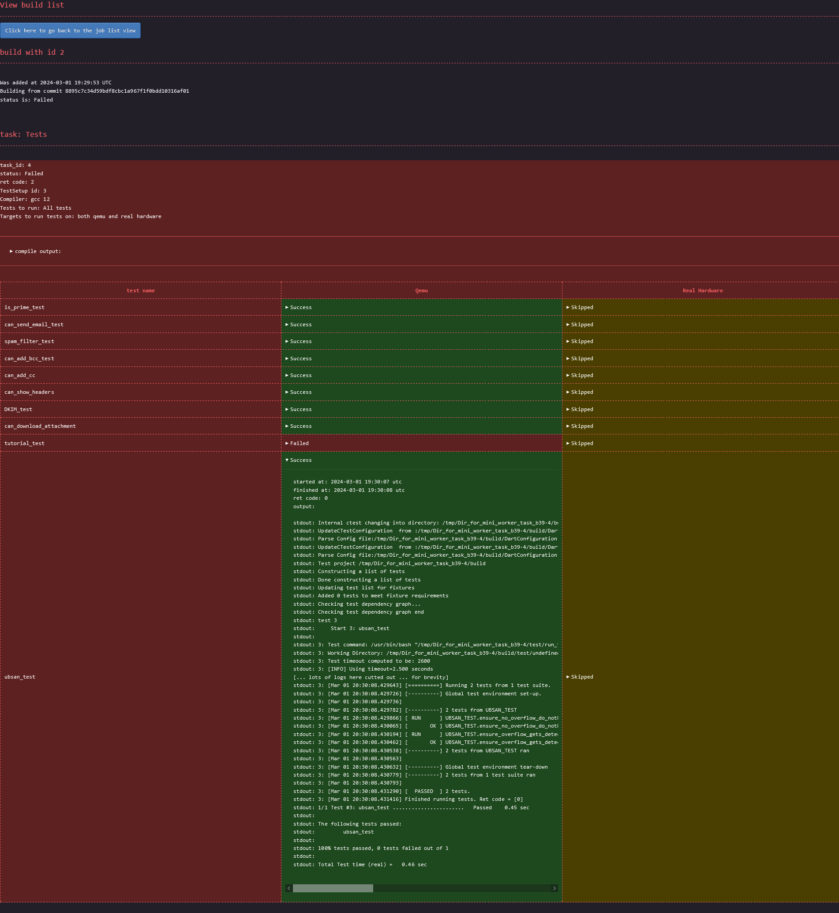

Introduction
This project is a mini continuous integration system tailored to my own specific needs. If it also fits yours, or you want to develop your own and take some inspiration from this, feel free to do so.
I developed this system since I wanted a CI system fitting the following requirements:
- as simple to use as possible.
- simple to tweak
- with fast interactions
- can run tests on embedded devices attached to a PC
- extracting specific data should simple
- automating tasks should be simple
- possibility to follow the progression of a test execution live
All the systems out there were I looked at were failing at least one criteria. This is not to say they are bad, only that I wasn't willing to compromise here and decided to rather roll my own for my specific needs.
Pretty much all features which can be expected from a professional CI service are not to be found here. This is simply because I don't need them. For example, there are no user accounts, no per-user permissions, no email notifications when a build fails, no button to cancel or retry a build, no automatic reload of the html page to display the latest job status.
The features it actually provides are rather basic:
- users can post a job request and specify a few parameters:
- the git commit id to use
- the tests to runs
- if the tests should be executed on real hardware, qemu or both
- ensuring the code follow the formatting rules
- ensuring the code follow the linters rules
- tasks are executed and the output saved in a database
- tasks output can be retrieved and viewed
Project goals and constraints
Simple to use
I consider the user experience to be of utmost importance when making programs meant to be used by people. Therefore I set it out that the CI should be dead simple to use. There should be no such thing as spending time digging through tons of buttons to perform a simple action. There should be no time spent to learn how to use it even. Everything should be intuitive and self explanatory. One shouldn't need a PhD to use a CI system.
Simple to tweak
The point of this CI is to fit my specific needs, not anyone else's. And needs might change over time. Some constraints which might have been valid at the time of starting the project might no longer hold in the future and therefore some technical choices might not be the best anymore in the future. Changing the code to always have something fitting my potentially changing needs should always be possible and easy-ish to accomplish. Keeping everything simple is therefore a design constraint which impacted a few choices.
Fast interactions
I fondly remember the day in 2008 or 2009 when I attended a presentation from someone working at Google on their search engine. He started its presentation saying that if you have a question and the answer is already in your brain, the time it takes to retrieve the information is short enough to be considered quick. If you don't, but the answer is in a book sitting on your desk, it is still fast. Next stop to find an information would be at a local library, in your neighbourhood. And then, the next stop would be in a big library ... six thousands two hundreds kilometers away.
Of course these were only a metaphor for what was going on in computers. The memory in the brain was akin to cpu registers, the books on your desk was akin to cpu caches, the local library was a metaphor for the system memory (RAM) and the big library 6200 km away was used to give an idea of how much slower accessing a hard drive was in comparison.
He continued saying that "not doing anything" was actually one of the hardest thing to do for a human being and that at google they had a requirement of at most 500ms between the moment a user press enter and the page with the result shows up on their screen. This 500ms was apparently the limit someone can do nothing before losing focus, before starting to daydream. He continued saying that out of 500ms, they considered that 100ms was used in the network to move the user's query from its computer to the google's datacenter, and then 100ms for the reply back. Therefore Google only had 300ms to understand the query, crawl the whole web in search of answers, rank the web pages, collect the most prominent ones, create an html page with links to the relevant websites and send it.
I'm personally skeptical when I hear about "social studies" since the replication crisis of 2011. Even more so when the numbers are "round" (like 500). I came across this constant once on Wikipedia with a specific name I can't unfortunately remember. On Wikipedia it was said to be 400ms. I also remember an article from the Flutter development team explaining the same and putting it at one second.
I don't believe there is actually a number for everyone. I believe some people can focus longer have others. I don't even believe there is a number for each person. I expect someone who is well rested to be able to focus longer before day dreaming than the same person being exhausted.
I am however convinced that the longer it takes for an action to complete, the least efficient someone becomes. Therefore I set as a goal that interacting with the CI should be fast. How fast is fast enough? I didn't really set a number here but it guided some of my technical choices.
Easily extract data
One important design point, is that a user shall be able to easily extract a single element of data. One example a such data would be getting the output of one specific test compiled with gcc from distro running on real hardware. A user shouldn't need to wade through mountains of logs to extract only the output related to that very specific test. A user shouldn't need to go through many buttons of a UI to get there. Ultimately, such action should as quick to repeat on different builds as possible.
Can run tests on embedded devices attached to a PC
This is the main use case I had for this CI. Therefore it is a no-brainer that it was a goal of the project. Without this feature, everything else is useless. The CI should be able to compile tests, connect somehow to a device, push the binaries there, optinionally reboot the device if necessary, execute the tests, extract the test results and make them available.
Automating tasks should be simple
A developer is much more likely to consider running tests on its "local" commits (before even creating a pull request) if the procedure to do so is easy, quick and streamlined. This help increases the software quality by ensuring tests are executed more often and therefore issues are discovered earlier, when they are easier to fix.
Automating a task should require trivial knowledges of tools that the software developers are already familiar with or that can be picked up very quickly (in a matter of minutes).
Possibility to follow the progression of a test execution live
This goal comes from the issue of having potentially long running tests, say a few hours long. If the test produces output constantly, a developer shouldn't need to wait hours before he can see the beginning of the output. In other words, as soon as some output is produced, a developer should be able to see it. Obvisouly there will be some delays between the moment some output is produced and the moment it appears on the developer's screen, but that delay should be limited to a short period and not dependent on the duration of the test execution.
Architecture
At its core, the CI architecture is quite basic and similar to many other solution in this space.
It is best viewed as in the following graphical representation:
The CI system comprises of two parts, a database accessible through a web interface, where users can post requests for builds or view the status of currently running, pending, or finished jobs and tests runners. Test runners are simple machines that will query the database to see if there are pending tasks they can execute. In such case, they will pick one, execute it and report into the database the task output as it happens.
In the current system, the runners poll the database instead of having the CI keep track of which machine is busy or idling and automatically push a task request to a test runner. This surely is less efficient as having the web server keeping track of the workers, knowing which worker can execute which tasks, which one is busy at the moment, etc and let the web server schedule tasks on the worker themselves. However, the polling method is the simplest design to implement.
Test runners might be able to execute any possible task or only a subset. For example a task runner might have qemu installed on it but no real hardware connected to it. This task runner can therefore execute tasks requiring tests to be executed only on qemu.
When requesting a tasks, a test runner will thus tell its capabilities to ensure it receives a task it can actually perform.
Implementation of the CI web server
User interface
One of the goal was that the project needed to be dead simple to use. Everything had to be self explanatory. Below are screenshots of the three pages a user will interact with. You can decide by yourself if everything looks clear or not. Note: for best view, right click on the images and open them in a new tab.
The main page:

The page to add a new job:

Page showing the details of a requested build:

I can't get credit for the CSS though. I took it from the terminimal theme from the zola blocg
engine
Strict conformance to web standard
Special care was taken during the development to ensure that the web pages are 100% compliant with the w3c
validator. Both the HTML and the CSS report no
errors. The CSS does report warnings with these validator. As a consequence, the website is 100% functional
using terminal based web browsers such as lynx or w3m.
Something to note, in order to achieve this 100% conformance, the output of the tasks had to be sanitised since
not all valid utf-8 sequences are accepted by the HTML specification. As such, the data reported on the HTML
might not always correspond 100% to what is saved in the database. For example, the shell control character
escape is displayed in the html page as \u{1b}
The html are also all self-sufficient. They do not load external resources. Therefore, saving a page locally
to be displayed later on, even without network connectivity is trivial.
Easy data extraction
One requirement was to make it easy for a developer to extract only some data. One way would be to simply
query an SQL request against the database, but since the choice was made to use sqlite, the database doesn't
process network request. Instead, each of the cells on the html containing interesting data are selectable
with a CSS path. To extract the CSS path of a specific element, for example the status of the ubsan_test,
compiled with gcc from distro and executed on qemu, a user would:
- open the build page on firefox
- open the developer tool
- select that element
- right click
- click
copy >> CSS Path
Then to programmatically retrieve the status of the ubsan test of any build, a developer would only need to execute the following command:
wget -q -O - 'http://address_of_ci_server/build/<a_build_id>' | \
htmlq --text '<the css path copied from firefox with only a slight manual tweak>'
The CSS path need to be slightly manually tweaked since the one Firefox returns isn't specifying enough in
some places and too much in others. For the given example, Firefox would return html body div.Failed table tbody tr td.Failed details summary. The two .Failed here would need to be removed, and a few elements need
to be enhanced with the correct title. The correct CSS path is: html body div[title="Tests_gcc_from_distro"] table tbody tr[title="ubsan_test"] td[title="Qemu"] details summary The title's value can be found in the html
tags. Once the correct path is extracted, a developer can reuse that same command, only changing the build
id. Getting the logs of the test instead of the status can be done the same way. Same for any other test.
Database choice
One of the goal of the project was to remain as simple to tweak as possible. Another goal is performance. These two are often at odds. Most of the time I favoured keeping things simple and easy to maintain over achieving extra performance. At least for a first shot.
For the database I went for sqlite for the reason of simplicity. It doesn't require user
accounts. Everything is in a single file making it also trivial to backup shall the need arise. Admittedly,
sqlite is not the best choice here from a performance point of view, and as per sqlite's authors own
statement, my use case is not one for which sqlite is a good fit. Still, simplicity trumped performances in
my case, ... for now.
If I would have to chose another database, it would have been postgresql since it is well-maintained and has
lots of documentation. Otherwise, the option of creating my own data structures and serialising/deserialing
them to/from disk would also have been an option, but that would have gone against the goal of keeping things
easy to tweak.
One unfortunate consequence of using sqlite though is that it isn't accessible from the
network. Consequently the webserver provides some endpoints whose sole purposes is to act as a proxy to the
database. This is how for example workers end up updating the database with the test execution output: through
a POST method to the web server.
Language choice
For the choice of the programming language, the main criteria was performance in terms of execution speed. Memory consumption isn't as much of a concern, but due to CPU caches and TLB misses, there is also a high correlation between lower memory usage and increased performance. On top of that, execution time need to be consistent to avoid issues of intermittent high latency waved away as being "just a fluke", "just a one-time thing" instead of getting analysed. This means that languages relying on a garbage collector are out-of-question. Having consistent execution time also makes it possible to set short timeouts to detect when a task is taking too long and is likely stuck.
In the end, the choice was between assembly, C, C++, and Rust. I didn't consider Zig at the time but
it seems to fit the performance criteria like the others. I ended up picking Rust since it seems to be easiest
to maintain in the long term than the alternatives.
Web server choice
For the web server, once the language was decided, the main criteria was performance, especially latency. Throughput itself was actually given a very low position as a decision criteria as I wasn't expecting for even 10 req/s. The second criteria was to know if the webserver was wel documented, easy to use, well-maintained with a big team behind it. This was important to avoid betting on a project with a very low bus factor with a risk of being abandonned while I'm using it.
The choice was between axum, actix-web and rocket. Rocket had my favour as it looked to be the easiest
to use but it also had a very low bus factor at the time I made my decision. I deemed it too risky a
choice. Between axum and actix-web, I decided to go for axum as it looked to be the safest choice in
term of maintainance in the future and seemed to score better in latencies benchmarks.
Implementation of the workers
Language choice
There are no technical reasons to force the same technologies on the web server side as in the workers, however
rust fits the constraints of both, therefore there is also no reason to use two different programming
languages here either. For simplicity reason, rust stayed.
Picking up a task
The tasks a worker can execute depend on the configuration of the machine itself. For example, if a static analyser isn't installed on one machine, the worker executing on that machine can't obvioulsy perform the task of running the static analyser on the developer's code.
Therefore before assigning a task to a worker, it is necessary to know what the worker can and cannot do. For simplicity reason, the choice was made to have the worker poll for pending tasks. It is therefore up to the worker to tell what it can do when looking a task. This capability should be configured per-worker since it ultimately depends on the configuration of the machine. The configuration is for now hard-coded in the code. Changing the configuration requires therefore to change the code and recompile. Certainly not pretty, but good enough for my needs of the moment.
Executing a task
The workers are really simple, do not implement any security feature, and rely on hard-coded knowledge from the project codebase it executes things on. For example, to execute a task, a worker will:
- retrieve the commit hash and the task to perform from the database
git clonethat commit- either:
- run a script from the cloned folder for tasks such as
formatting codeorstatic analysis. - call
cmake generate <some parameters> && cmake build && ctestin the project folder
- run a script from the cloned folder for tasks such as
This keeps the worker's code simple however it brings two notable issues:
- huge security issue of type remote code execution (more on that on the Self security assessment page)
- no backforward/forward compatibility
Backward/forward compatibility issue means that since the knowledge to execute a task is hardcoded to run a script, the day the file name of those scripts changes, or take different arguments, the CI will need to be adapted.
Reporting tasks that will be executed
When running tests, the worker finds itself the exact list of test to run by running ctest --show-only=human
and potentially filtering out tests the user asked not to execute. It then reports the exact list
into the database. This is how it is possible for the webserver to list the tests that gets executed.
Tests execution
Tests are executed sequentially even more than one hardware resource is available. This is obviously suboptimal and the only reason it is that way is because I didn't spend time implementing this feature.
Reporting data constantly to the database
When executing a task, the worker will execute long-running commands in the background, keep reading the standard output and standard error produced by said commands and constantly update the database with it.
At the moment, only long running commands are executed that way. A few commands are still executed synchronously and the worker wait for them to finish before reporting their output. Those are:
git clonegit remote updatecmake generate stage
These commands execute under two seconds. The user experience is therefore not too negatively affected. The only reason why these commands are executed that way is only due to lack of time to turn them to background commands after an initial implementation.
Since the database is not available through the network, any access to it is done through special routes provided by the webserver.
In order to avoid excessive network I/O, the worker will try to batch outputs, such that several lines of
stdout/stderr can be appended in the database with only one network request.
Importantly, the worker sanitises what it reads on stdout/stderr such that what is saved in the database
is guaranteed to be valid utf-8, meaning the inputs might be slightly silently modified in the process.
Taking a worker out
When a developer needs to troubleshoot some issue, it is common that he will need an exclusive access to the hardware. Since a worker is consistently looking for picking up a task to execute and run command on the same hardware, there is a contention situation. To resolve this, there must be a way to tell a worker to temporarily stop picking up new tasks.
This feature is implemented through unix signals. When a developer needs to shut off a worker so he can have
full control of the machine, he will send a signal SIGINT or SIGTERM to the worker. Upon receiving it, the
worker will acknowledge it by writing a message on the console, and finish its current task before exiting.
Sending a second signal will order the worker to abort its ongoing task to immediately relinquish resources.
A worker can then later be restarted normally.
Missing feature from the worker
Besides the lack of parallelism when running tests, one other missing feature here is that the only output the
worker reports in the database is what the executed commands produce on their stdout/stderr. Any other
artifiacts, such as files produced on the file system, are simply discarded at the end of a task
execution. Again, this was good enough for my needs.
Security self assessment
Before talking about security, one needs to define a threat model and risk assessment. In my case, the threat model is quite simple: this is a toy project meant to be used only for myself on a private environment and not publicly accessible to anyone outside of my private network. Therefore most security protection are unnecessary here. Nevertheless, below is a list of identified security issues and the mitigations (or lack of) in place in the project.
✅ Prevention against SQL injection
The webserver receives external user-controlled inputs which ends up being used to craft SQL requests.
SQL injections are a well-known class of security issues which at its root come from not separating
parameters from the request itself and instead mixing them together through string concatenation.
To prevent this class of issue, all SQL requests are made through sqlx, a rust library managing
databases connections, and use the feature of providing arguments separately from the request itself.
✅ HTML escape everywhere (hopefully)
The "build detail" web page contains data that is produced by external applications, ultimately controlled by the user. For example, the output of a test is given by the worker and saved in the database. A malicious user could thus try to inject malicious code that would be interpreted by the web browser when loading a page.
I'm unfortunately not aware of a method equivalent to the SQL injection prevention described above for
HTML. Instead of having separated HTML "layout" and "content" which would prevent this class of issue
completely, the user controlled inputs is first escaped, and then added to the HTML "layout" part.
All places where data might come from the databse has been manually checked to ensure it goes through a
a sanitisation function before getting added the the rest of the HTML page. However, all it takes is
to miss one single place for the security to be defeated. In a spirit of defence in depth, other
mechanisms are in place too.
✅ No javascript, no images, no videos, no sound, no remote fonts, no external css
The website does not use javascript on any pages. Nor does it load external assets such as images, videos or
remote fonts. Consequently, the html pages contain a very strict content security policy set to forbid
loading such assets. This is done using <meta http-equiv="Content-Security-Policy" content="default-src 'none'">
Therefore, if some user-controlled data were to be displayed without being sanitised, and tried to execute some javascript code, or load an external resource, it would be blocked by the browser. This is valid for both inline javascript or other resource, as well as for loading external assets.
Regarding the CSS, the webpage embed all the CSS it uses in the HTML header part, and the content security
policy is set to only allow that specific CSS which is verified by a hash.
Consequently, all security issues related to external sources loading or using assets should be prevented.
❌ NO HTTPS
At the time of writing, the webserver only serves pages via unsecured channels. Since the website does not contain private data, and everything is accessible to any user, this doesn't lead to an issue of the "information leak" type.
However, since the communication channel is not encrypted, an attacker who could modify or inject packets in the network could therefore send a differnt page to the client and make him load that one instead.
This is certainly a big issue for a public-facing website. In this case, since the mini_ci is only
meant to be used by myself, for my own needs only, at home, I'm personally not concerned about this.
Technically I'm not concerned about any other potential security issue for that same reason though.
Obviously, for any more serious usage than just at-home toy project, https should be enabled and even
enforced with HSTS
❌ Denial of service
The CI server doesn't try to be resilient to denial of service attacks. It doesn't implement any "API throttling" or features similar to "fail2ban" when an IP address does too many requests too quickly. This means it is trivial to render the CI server unusable. One simple way to do so is to keep posting job requests quickly. Workers execute job requests in the order they were posted. Therefore this attack would force a legitimate job request to wait for a loooong time before getting picked up.
Another way of making the CI server useless is by using the API meant for workers. When idling, a worker will check if there are any pending task it can process. If so, it takes the task out of the pending list and starts working on it and writes the output to the database. A denial of attack could simply be done by using the API to keep requesting pending task and never actually executes them. This will make the tasks seen as "running" whereas nothing will be achieved.
Yet another way to make the CI unusable, still using the worker's dedicated API, is to push data to the database, pretending it is related to a job being currently processed. This way the legitimate job's output will be completely scrambled and dwarved among a sea of garbage data. Preventing this issue can be done in a way similar to the anti-CSRF tokens. Implementing this security is at odd with the "simple and easily tweakable" goals.
❌ Remote code execution
The point of a CI is to execute cute coming from a different place: the tests of the actual project to run. This includes running code when compiling since the project uses CMake which let's users execute arbitrary code at the "cmake generation" step. On top of that, tests can often execute script for legitimate reasons, which also means there can be arbitrary code execution at the "run test" step.
Since one goal of the project was to remain simple and tweakable on one side, and used only by myself on another side, I didn't spend any time implementing a sandbox mechanism for all the code executed by the project to test itself. Instead, the cmake generation step, and the test execution tests are executed directly on the same environment as the CI itself. This means there is a huge security issue trivial to use. However, since I'm the only one who can use this CI on my personal network, and also the only one who controls the tested project, no one can get gain access they didn't already have to anything.
✅ Compliance with GDPR
The website do not share data any data with any third party, nor does it uses any cookie. Consequently, there is no need to show a banner asking for the user about its preferences about usage of its personal information.
On top of that, no personally identifiable information is saved anywhere. Not even ip addresses or user agents are logged.
Consequently, the website complies with GDPR rules.
❌ Supply chain attack
mini_ci makes use of external rust crates which were selected based on reputation. Said dependencies also
have depdencies themselves. I didn't take the time to thoroughly review and vet all the external code I'm using.
This is surely a case for unwarranted trust and certainly is a risk.
Performance self assessment
In the end, when I started to measure performance (in a non-scientific way), the numbers I was getting to interact with the webserver were mostly below 15ms. Unfortunately when looking at the Firefox console I've seen loading time go as high as 100ms (stays mostly on 50-60ms range). Most of the latency, (Firefox's loading time, network travel time, TCP handshakes etc...) is not something under my control.
At that point, I'm satisfied enough with the performances of the web server per se. I wont pursue the goal of increased performances any further (even though I have some ideas).
Below are the benchmarks I did. Those were conducted on a commodity hardware, specifically a DELL Latitude 5501 laptop. These benchmarks were executed on a linux virtual machine running under WSL2 in Microsoft Windows 10.
How long does it take to retrieve the main page?
To check the time it takes to retrieve the main page, the benchmark used was simply to compute the wall clock time
of running wget to dowload the main page.
shell> hyperfine "wget -q -O - 'http://localhost:3000/'"
Benchmark 1: wget -q -O - 'http://localhost:3000/'
Time (mean ± σ): 2.4 ms ± 0.5 ms [User: 1.4 ms, System: 0.4 ms]
Range (min … max): 1.6 ms … 6.1 ms 663 runs
It is to be noted that thes timings include the time it takes to start wget, create the request, make the
TCP handshake, post the request, receive the response, and report it. The server's log showed lower times
below one millisecond (reported at 0).
How long does it take to retrieve the data of a specific build?
The benchmarks are done by simply measuring the time it takes to run a request via wget. This is the data for the time it takes
to retrieve the data of a specific job:
shell> hyperfine "wget -q -O - 'http://localhost:3000/build/3'"
Benchmark 1: wget -q -O - 'http://localhost:3000/build/3'
Time (mean ± σ): 8.4 ms ± 0.4 ms [User: 1.5 ms, System: 0.4 ms]
Range (min … max): 7.5 ms … 11.2 ms 273 runs
How long does it take to retrieve the load the page to enter a build request?
The benchmarks are done by simply measuring the time it takes to run a request via wget. This is the data for the time it takes
to retrieve the add_job page.
shell> hyperfine "wget -q -O - 'http://localhost:3000/add_job'"
Benchmark 1: wget -q -O - 'http://localhost:3000/add_job'
Time (mean ± σ): 1.8 ms ± 0.4 ms [User: 1.4 ms, System: 0.3 ms]
Range (min … max): 1.3 ms … 4.7 ms 803 runs
How long does it take to post a job?
The benchmarks are done by simply measuring the time it takes to run a request via curl. This is the data for the time it takes
to add a job:
shell> hyperfine "curl 'http://localhost:3000/add_job' --compressed -X POST --data-raw '<all the parameters of the add_job method>' "
Benchmark 1: curl 'http://localhost:3000/add_job' --compressed -X POST --data-raw '<all the parameters of the add_job method>'
Time (mean ± σ): 15.6 ms ± 2.5 ms [User: 3.3 ms, System: 1.3 ms]
Range (min … max): 12.8 ms … 28.5 ms 199 runs
It is to be noted that thes timings include the time it takes to start curl, create the request, make the
TCP handshake, post the request, receive the response, and report it. The timings reported from the server's
log were consistently around 9 to 11 milliseconds with peaks at 13 milliseconds.
Future work
I'm not planning to continue this project as it fulfills all my goals already, and the point is to do as little yak-shaving as necessary. However beolow is a list of features or ideas I would implement if I had the control of time and could spend all the time I want on any thing I fancy.
This page contains a list of features which I would be working on if I wanted to continue working on mini_ci
Live test output
One feature which was actually important and lead to some design decision was the ability for a user to see the output of a test live. This is the main reason why workers keep updating the database why output produced by tests instead of doing only one push when a test finished.
At the moment, a user can only get a live output by keeping refreshing the html page and manually scroll to
the bottom of a test output. This can obviously be easily automated thanks adding title attributes
everywhere relevant in the html pages but it is such a waste of time and resources (since the user will keep
loading the full page every time).
One solution to that would be for the web server to provide websocket endpoints which would stream the data received from a worker. There might also be some other technical possibilities based on database triggers.
Database available on the network
One of the first things on the todo list would be to move from sqlite to postgres for the database. The
benefits are multiple here.
For one, since postgresql can listen to requests on the network, workers could then directly issue requests
against the database without having to go through a proxy layer implemented via special routes in the web
server. This would simplify the project a bit and should slightly increase the performances as the proxy layer and
its overhead would then vanish.
Another benefit here would be the one of performances. The official sqlite web page lists the use cases for
which sqlite is a good fit, and others which shows where it is not the best choice for the task. mini_ci
falls on the later category unfortunately and there should be some performance to be gained by moving to
postgres.
Yet another benefit in terms of performance, is that extracting the data related to one single test of a specific build won't require anymore to retrieve the data of all tests of that build, create a webpage with everything, transfer all those data, only discard the data of all tests we are not interested in.
The downside of this is that the database configuration would need to implement restricted user accounts for security purposes, in particular to ensure no one can simply wipe out the database.
Running tests in parallel
At the moment, tests are executed sequentially. If more than one instance of a hardware is available, all of them could be used to execute separate tasks or tests concurrently. The worker would need to monitor all of them and ensure the output of separate tests or jobs do not get intertwined
Desktop application
Having to use a web browser to load web pages and interact with the CI, either to post a job request or see
the output of one is something I find inefficient. For one, it looked to me that loading a simple page takes
50ms with Firefox which I can't control. I consider 50ms to be a long time to wait when interacting with
computers. Bearable, sure, but not great. I'm not a web expert but the fact that firefox needs to load a page,
to parse it, extract the structure, find out how to layout div, which css characteristics to use to draw the
user interface, ... and do that at every page load is surely sub-optimal. The only thing that changes in the
web pages of the CI is the content itself, not the interface. Therefore having a desktop application (either
terminal or gui), where the user interface would be compiled and not interpreted every time would surely make
for faster interactions, and lower memory usage too.
On top of providing a faster user interface, a desktop application could also make use of the user's disk to cache data from the database, essentially having a local replica, kept in sync with the CI's one. That way, when loading data, the app would load everything from its local copy and displays it immediately, instead of issueing a network request and have to wait for the output before presenting it to the user. Some work would be required to ensure cache coherency here. For example the app could first look into its cache and display the data, while also issuing a network request concurrently to see if something changed. If something did change, then the app would redraw the screen with the latest data. This would make for a nicer user interface as it means faster interactions.
Increased performance of the workers
At the moment, the code of the workers is kept quite simple, and while they push data to the database (through the webserver) and wait for a reply confirming everything went well, they do not do anything. Therefore the worker end up adding some delay when starting a new test because it waits for a confirmation related to a former test.
Running cmake and tests in a virtual machine
This would be about fixing the huge security issue of remote code execution described on the security page.
Simply put, the workers would start a virtual machine in which they would execute the "cmake generation" steps as well as executing scripts (e.g. the ones handling tests) provided in the tested project.
From a user point of view, it doesn't bring any user-facing feature though.
Caching html pages once tasks are finished
Once a job is finished, its data is fixed, and therefore loading the page related to said job should always return the exact same html page. This is a perfect case for caching. When the web server is told a job finished, it could then create the html page once and save it to a cache. A request for that page later on can be processed significantly faster that point.
HTTPS
Enabling encrypted communications is quite high in the list of important things to do for security reasons.
Email notification
Having to check every now and then to see the status of a job is tedious. Of course this can be easily
automated thanks to the work put into providing html page with title everywhere necessary, but it would
be nicer to not even have to think about it. Instead of monitoring a job status, a user could receive
automatically receive an email with the job's result as soon as it becomes available.
-
desktop (terminal) application to push test request / view output
-
websocket to provide live output
-
with desktop app, cache database locally to view output of finished tests without doing a network request